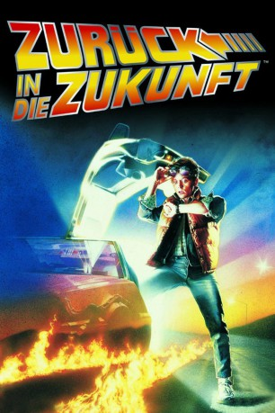

Auszeichnungen: 1 Oscars gewonnen für 3 Oscars nominiert
 gesehen am 30.08.2016
gesehen am 30.08.2016Alternativ: Back to the Future
Auszeichnungen: 1 Oscars gewonnen für 3 Oscars nominiert gesehen am 30.08.2016
 
 IMDB-Wertung: 8.5 / 10
IMDB-Wertung: 8.5 / 10  IMDB-TOP-Platzierung: 42
IMDB-TOP-Platzierung: 42  Metascore:
Metascore: 
Der Teenager Marty McFly wird mit der Zeitmaschine seines Freundes, dem skurrilen Wissenschaftler Dr. Emmett Brown versehentlich ins Jahr 1955 geschleudert. Dort verhindert er zunächst unabsichtlich, dass sich seine zukünftigen Eltern kennen lernen und in einander verlieben, womit er seine eigene Zeugung gefährdet. Zu allem Überfluss verguckt sich seine Mutter auch noch in ihn. Ihm bleibt nun eine Woche Zeit, seinen tollpatschigen Vater mit seiner Mutter zu verkuppeln und gemeinsam mit Docs dreißig Jahre jüngerem alter Ego einen Plan zu entwickeln, wie sie das bevorstehende große Gewitter nutzen können, um ihn in die Gegenwart zurück zu schicken.
Jahr: 1985
Dauer: 116 Minuten
FSK: 12
Land: USA Studio: Universal PicturesTonspuren:
Untertitel: Deutsch,
Auflösung: 720p (1280×688) Größe: 4474 MB
Genre: Abenteuer, Komödie, Sci-Fi
Regisseur:  Robert Zemeckis
Robert Zemeckis
Drehbuch: Robert Zemeckis, Bob Gale
Soundtrack: Alan Silvestri
Darsteller:
 Michael J. Fox als Marty McFly
Michael J. Fox als Marty McFly Christopher Lloyd als Dr. Emmett Brown
Christopher Lloyd als Dr. Emmett Brown Lea Thompson als Lorraine Baines
Lea Thompson als Lorraine Baines Crispin Glover als George McFly
Crispin Glover als George McFly Thomas F. Wilson als Biff Tannen
Thomas F. Wilson als Biff Tannen Marc McClure als Dave McFly
Marc McClure als Dave McFly Wendie Jo Sperber als Linda McFly
Wendie Jo Sperber als Linda McFly George DiCenzo als Sam Baines
George DiCenzo als Sam Baines Frances Lee McCain als Stella Baines
Frances Lee McCain als Stella Baines James Tolkan als Mr. Strickland
James Tolkan als Mr. Strickland Casey Siemaszko als 3-D
Casey Siemaszko als 3-D Billy Zane als Match
Billy Zane als Match Courtney Gains als Dixon
Courtney Gains als Dixon Norman Alden als Lou
Norman Alden als Lou George 'Buck' Flower als Red the Bum
George 'Buck' Flower als Red the Bum D'Janine King-Lasky als Student , uncredited
D'Janine King-Lasky als Student , uncredited Tom Willett als Pedestrian in town square , uncredited
Tom Willett als Pedestrian in town square , uncredited Donald Fullilove als Goldie Wilson
Donald Fullilove als Goldie Wilson Elsa Raven als Clocktower Lady
Elsa Raven als Clocktower Lady Richard L. Duran als Terrorist
Richard L. Duran als TerroristDatei: X:\3-Trilogie(N-Z)\Zurück in die Zukunft\Zurück in die Zukunft 1 (1985, FSK12, 1280x688).mkv seit 14.02.2015
Festplatte: HD Collection-3(N-Z)-6(A-Z)
 Alle Filme aus Gruppe '3-Trilogie(N-Z)\Zurück in die Zukunft'
Alle Filme aus Gruppe '3-Trilogie(N-Z)\Zurück in die Zukunft'